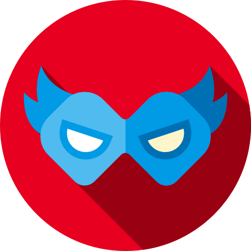

Find the right edition
Search Metron by series and issue, narrow by series start year, or look up a UPC. Choose the exact cover before adding it. Filter results by series name and format, and hide issues you already own.

Comic inventory & reading journal · Self-hosted
Give your comics a home of their own. Catalog the exact editions you own, keep track of the covers you want, and remember what you read—all in a DangerRoom instance you run yourself.
More than a list of titles
Search Metron by series and issue, narrow by series start year, or look up a UPC. Choose the exact cover before adding it. Filter results by series name and format, and hide issues you already own.
Keep standard covers, variants, and duplicates together without treating them as interchangeable. Each copy has its own inventory entry. Removing one leaves the others, your ratings, and reading history intact.
Want a variant of an issue you already own? Save that exact cover. Acquiring it removes that want automatically. Reading a comic never claims ownership or clears a wanted cover.
Mark issues read whether or not you own them. Keep an optional dated Reading Log, record rereads separately, and browse your journal by month. Read status and journal entries remain distinct.
Rate in half-star steps from 0.5 to 5. Scores are shared across an issue’s copies and covers. Series rating charts show how a run develops, using your saved data without extra Metron requests.
Find saved comics by series, publisher, issue, cover name, UPC, or ISBN. See owned issues across a series’ years and volumes, and open saved artwork at full resolution.
Your instance, your records
Your collection, wants, ratings, and journal live in SQLite. Saved metadata and cover images are reused when you browse, so revisiting your collection does not call Metron again.
Metron supplies metadata and artwork through read-only requests. Searches are cached and paced; there is no background collection synchronization and DangerRoom does not modify your Metron collection.
Cover originals live in local storage by default, with optional private S3 storage. Back up the database, covers, and configuration together. You control the instance and its retention.
Storage & S3 guide ↗Run your own DangerRoom
Use the browser on your computer, phone, or tablet. Add Hardlight for an Android client and its full-screen cover slideshow. You need your own instance, or access from someone who runs one.
Access matters. Browser access has no sign-in by default. Use a trusted network or enable authentication before exposing it publicly. Each Hardlight installation needs a separate device credential.
For a fresh collection, clone the repository and prepare private configuration:
git clone https://github.com/erickolb/DangerRoom.git
cd DangerRoom
cp .env.example .env
chmod 600 .env
vi .env
sudo docker compose build --pull
sudo docker compose up -dSet METRON_API_TOKEN and ALLOWED_HOSTS. For public browser access, set REQUIRE_AUTH=true and a strong DANGERROOM_ADMIN_TOKEN. Compose binds port 4340 to loopback; put your HTTPS proxy in front and preserve the original Host header.
Follow the deployment guide for proxy settings, importing data, and verification. Without Docker, prepare configuration, run pnpm install --frozen-lockfile, then pnpm start. The default local address is http://127.0.0.1:4340.
Already running DangerRoom?
The Android companion connects to your instance and puts your saved covers on display. Get the APK, set up updates with Obtainium, and connect your device.
Hardlight for Android →